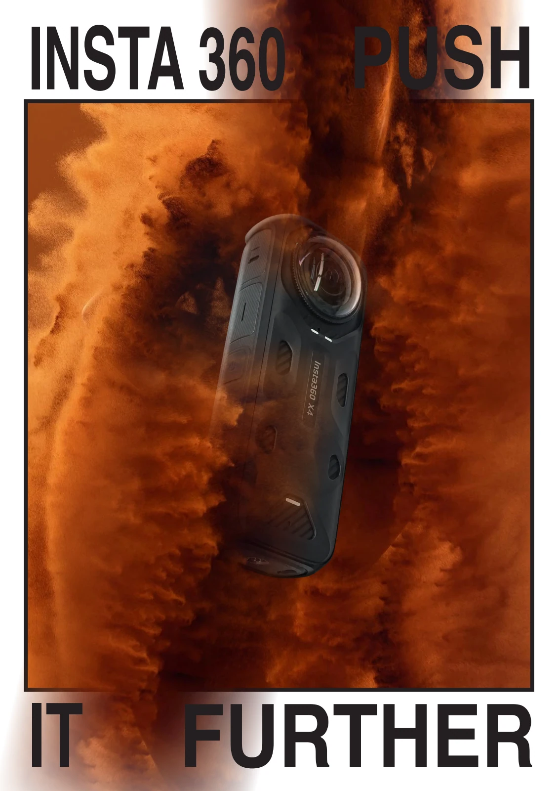
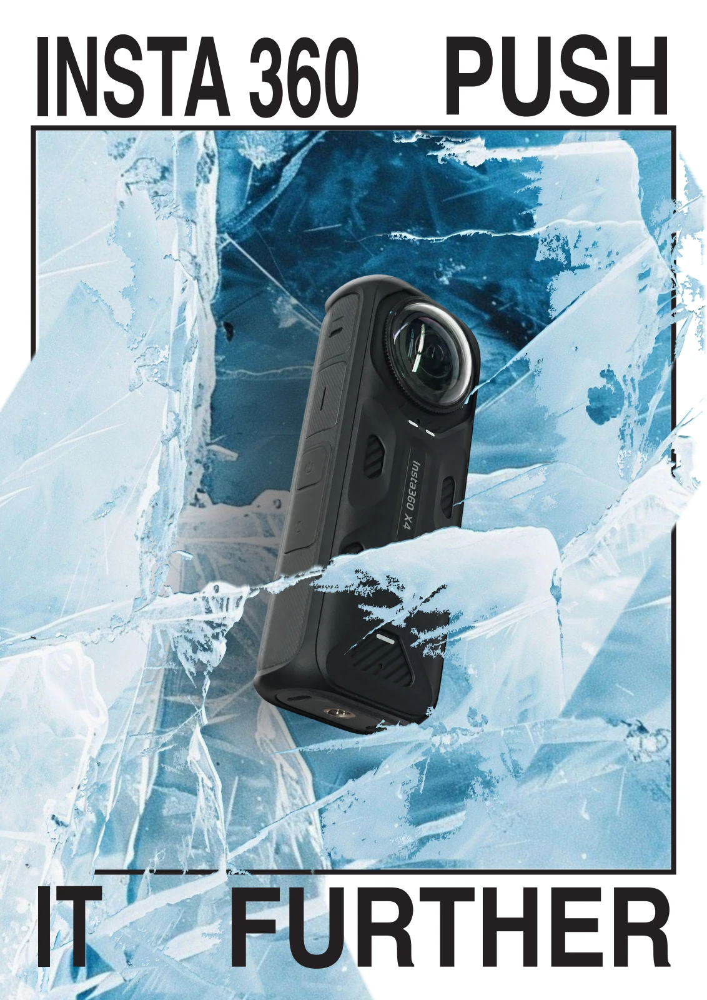
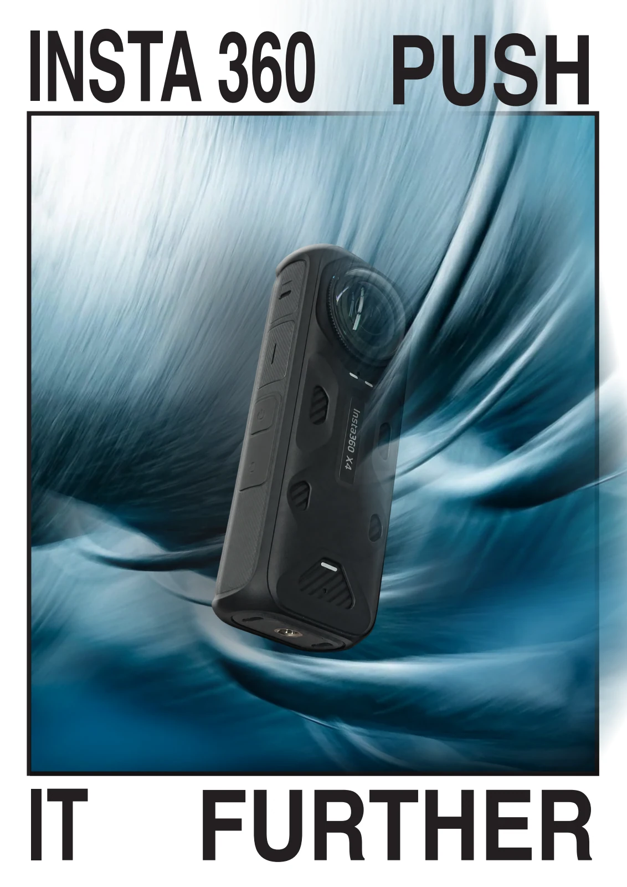

Insta360 X4 — À l’épreuve des éléments
Le défi : choisir un objet et créer une image en 45 minutes. J’ai choisi la caméra Insta360 X4, puis décliné le concept en trois affiches autour de la résistance, de la polyvalence et de l’immersion.
Le sable, la glace et l’eau évoquent la résistance de la caméra et sa capacité à s’adapter à des terrains différents. J’ai gardé la même composition et fait passer les matières devant la caméra pour la plonger dans chaque décor. Le slogan « Push It Further » résume l’idée : continuer à filmer même quand les conditions se compliquent.


